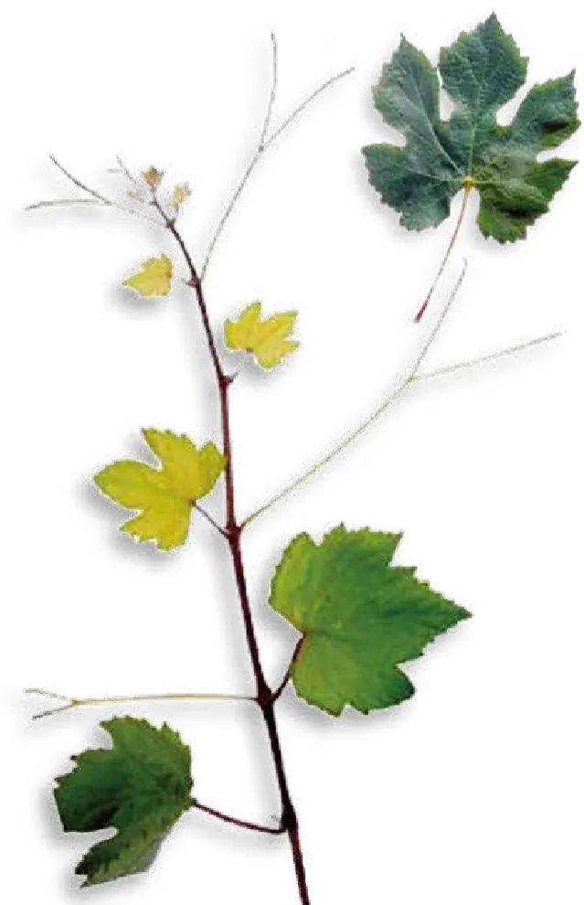

Chapter 3 · The Portuguese grape varieties
Baga (R)
Origin:
As early as 1875, Vila Maior had described the distribution of this variety as being restricted to the Bairrada. More than half the viticultural area of the Bairrada is planted to this variety.
Wine Description:
The wines are characterized by intense and ruby or garnet, sometimes violet, colour. The aroma is very fruity, with touches of mulberry, compote, honey, and camphor. Young wines on the palate often seem somewhat thin, with strong tannin notes, and a little tight. As a mature wine, the tannins become more rounded and the wine gains some depth” (Cardoso 2005). This wine has caused mild controversy because of its high yield capacity. With careful quality monitoring, however, this variety is capable of delivering some of the best wines in Portugal.
Regional classification:
DOC quality wine: Douro, Bairrada, Beira Interior, Alenquer, Tejo, sub-regions of Almeirim, Cartaxo, Chamusca, and Tomar.

IPR quality wine: Encostas d'Aire, Alcobaça.
Regional wine: Minho, all sub-regions of Beira Interior, Estremadura province, Tejo, Alentejo, and Algarve.
Morphology:
Young shoot (form of tip): Open, with crimson red tip and strong, dense hairs.
Young leaf: Green with bronze spots, stronger, denser hairs on ventral side.
Inflorescence (sex of flower): Hermaphrodite.
Mature leaf: Medium size, pentagonal, five lobes; medium and dark green blade, blade slightly twisted, slight blistering on blade, dense hairs on lower side of blade. Short convex teeth, slightly open V-shaped petiolar sinus. Closed U-shaped upper lateral sinuses.
Bunch: Medium size, conical, dense, peduncle of medium length.
Berry: Round, medium size, blue-black, skin of medium thickness, soft flesh.
Phenology:
Time of bud burst: Medium season , 10 days after the Castelão.
Flowering: Medium season, 6 days after the Castelão.
Berry (colour change): Medium season, 2 days after the Castelão.
Berry (harvest ripe): Late, 2 weeks after the Castelão.
Vegetative and agronomic potential:
Vigour of shoot growth: Medium to high.
Pruning weight: 3.5 kg/ha.
Shoot attitude (habit): Semi-erect, although some shoots are plagiotropic, and fall off.
Length of internodes: Medium.
Shoot length: Medium.
Tendency to form lateral shoots: High.
Rate of multiple bud bursts: Low.
Bud fertility index: High.
Yield: Medium, with up to 15,000 l/ha. (RNSV statistical value: 2,200 kg/vine (Average of at least 40 clones recorded in Anadia, 5 years).
Yield consistency: Stable.
Crop uniformity: Uniform.
Winkler Index: High, and therefore ripening problems occur with September rainfall.
Sensitivity to abiotic factors: None, normally.
Susceptibility to fungal diseases: Low susceptibility to Peronospora and Oidium, extremely susceptible to Botrytis.
Bunch size: 260 g on average, but irregular.
Bunch density: Very dense.
Berry size: Large (1.5 g).
Berry skin: Medium firmness, sensitive.
Seeds per berry: 2.6.
Vineyard conduction system: Cordon Royal with wire frame trellising; traditionally multiple Guyot.
Soil requirements: Suited to all soil types, although recommendations for improved quality include well drained soil, of lower fertility and limited humidity; calcareous clay soils of the Jura are considered good, whilst soils with a low pH value are considered unsuitable.
Climatic requirements: Intense solar irradiation for a long growth cycle.
Irrigation: Only in very dry, poor soils.
Incidence of coulure/millerandage: None.
Spoilage of mature berries: Risk of inadequate ripening and grape rot.
Risk of bird damage: Low.
Machine harvest suitability: Well suited.
Oenology:
Wine type: Quality wine, red sparkling wine, rosé wine.
Potential alcohol content: Medium. Because of its high yield capacity, this variety cannot ripen in fertile soils. Very high quality wine can be achieved with this variety by restricting yield. RNSV statistical value: 10.35% vol. (Average of at least 40 clones in Anadia over 7 years).
Natural acidity of must: Relatively high (6–7 g/l). RNSV statistical value: 5.88 g/l (Average of at least 40 clones in Anadia over 7 years).

Total anthocyanins: RNSV statistical value: 865.86 mg/l (Average of at least 40 clones in Anadia over 2 years).
Total phenols index (at 280 nm) of must: RNSV statistical value: 30.52 (Average of at least 40 clones in Anadia over 2 years).
Risk of oxidation of must: Only where sanitary vine protection fails.
Colour intensity of wine: High.
Wine colour tonality: Garnet.
Risk of oxidation of wine: Very stable.
Aromatic profile: High levels of terpenoids, sesquiterpenoids and norisoterpenoids.
Ageing potential: Excellent. Well suited to barrel ageing.